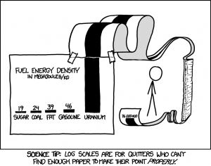
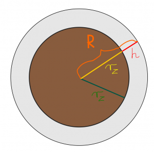

Liczby i operacje¶
Ta część zbiera podstawowe pojęcia dotyczące zbiorów liczbowych, zapisu liczb, działań na zbiorach oraz liczb zespolonych. Jest pomyślana jako przygotowanie do dalszych rozdziałów o funkcjach, ciągach i analizie matematycznej.
Wykład¶
- Materiały: Liczby_i_operacje.pdf
Zadania do wykonania ręcznie¶
Zbiory liczbowe i zapis liczb¶
Zadanie 1. Dla każdej z liczb
podaj najmniejszy spośród zbiorów \(\mathbb N\), \(\mathbb Z\), \(\mathbb Q\), \(\mathbb R\), \(\mathbb C\), do którego dana liczba należy.
Zadanie 2. Uporządkuj standardowe zbiory liczbowe przez inkluzję (co w czym się znajduje): \(\mathbb N\), \(\mathbb Z\), \(\mathbb Q\), \(\mathbb R\), \(\mathbb C\).
Zadanie 3. Zamień rozwinięcie okresowe
na ułamek zwykły.
Zadanie 4. Niech
Wyznacz zbiory \(A\cap B\), \(A\cup B\), \(A\setminus B\) oraz \(B\setminus A\) i zaznacz je na osi liczbowej.
Liczby zespolone¶
Zadanie 5. Znając już liczby zespolone, znajdź ręcznie miejsca zerowe funkcji kwadratowej \(y(x)=x^2+x+1\).
Zadanie 6. Dana jest liczba zespolona \(z=1+i\). Zapisz ją w postaci trygonometrycznej.
Zadanie 7. Oblicz ręcznie \(z^3\), gdzie \(z=1+i\).
Zadanie 8. Dana jest liczba zespolona \(z_1=3+4i\) oraz \(z_2=1-2i\). Oblicz ręcznie iloraz \(z_1/z_2\), podając wynik w postaci \(a+ib\).
Zadanie 9. Sprawdź w Octave wartości sqrt(2), pi, eps oraz i^2. Wyjaśnij, które z otrzymanych wartości są przechowywane dokładnie w używanej reprezentacji zmiennoprzecinkowej, a które jedynie w przybliżeniu. Zwróć uwagę, że eps nie jest stałą matematyczną taką jak \(\pi\): w Octave oznacza odstęp między liczbą 1 a następną większą liczbą reprezentowalną w typie double.
Zadanie 10. Dla liczby zespolonej z = 1 + 1*i sprawdź w Octave polecenia abs(z), arg(z), real(z) i imag(z) i powiąż ich wyniki z postacią algebraiczną oraz trygonometryczną liczby zespolonej.
Logarytmy i potęgi¶
Zadanie 11. Ile czasu musi upłynąć, by z pewnej masy \(m\) izotopu o czasie połowicznego rozpadu 1000 lat pozostał tylko \(1\%\) masy początkowej?
Zadanie 12. Zakładając \(x>0\) oraz \(y>0\), pokaż, że zachodzi
$ x^{\ln y}=y^{\ln x}. $
Wskazówka: przyda Ci się wzór na zmianę podstawy logarytmu.
Zadanie 13. Stwierdzenie, ile cyfr ma liczba zapisana w postaci \(10^{30}\), jest trywialnie proste. Policz ręcznie, ile w przybliżeniu cyfr ma liczba \(2^{1000}\), jeśli wiadomo, że \(\log_{10}(2)=0.30\). Na pewno przyda Ci się \(b=a^{\log_a b}\).
Zadanie 14. Zajrzyj na stronę w angielskiej Wikipedii poświęconą wykresom półlogarytmicznym (ang. semi-log plots) a następnie spójrz na poniższe obrazki


Odpowiedz: dlaczego do sporządzenia zamieszczonych obrazków użyto wykresu półlogarytmicznego typu lin-log?
Zadania dodatkowe¶
Zadanie A. W książce R. Feynmana możemy przeczytać następujący fragment:
„Dawno temu, w erze paleozoicznej, kropla popołudniowej ulewy upadła na błotnistą równinę, pozostawiając trwały ślad. Ślad ten w postaci skamieliny odkopał pewnego upalnego dnia w wiele lat później student geologii. Wysączywszy do dna wodę ze swojej manierki student ten bezskutecznie się zastanawiał, ile cząsteczek wody z tej starożytnej kropli mogło znajdować się w manierce, którą przed chwilą opróżnił. Spróbuj Ty ocenić tę liczbę.”
Zrób odpowiednie założenia potrzebne do rozwiązania zadania. Masa molowa wody wynosi \(18.01528\,\mathrm{g/mol}\), a manierka niech ma pojemność 1 litra. Inne potrzebne dane znajdź w Wolfram Alpha lub wykorzystaj z pamięci, np. związek między liczbą moli, masą molową, liczbą Avogadra i liczbą cząstek. To zadanie nie jest żartem i da się je rozwiązać.
Zadanie B. Liczba cząsteczek gazu doskonałego w \(1\,\mathrm{m}^3\) powietrza wynosi \(2{,}69\times 10^{25}\) (zapis kalkulatorowy: 2.69e25). Załóżmy, że każdą z tych cząsteczek nagle powiększyliśmy do rozmiarów ziarnka ryżu (grain of rice) i rozsypaliśmy równomiernie po powierzchni Ziemi, łącznie z oceanami. Oszacuj, jak grubą warstwą ryżu pokrylibyśmy naszą planetę.
